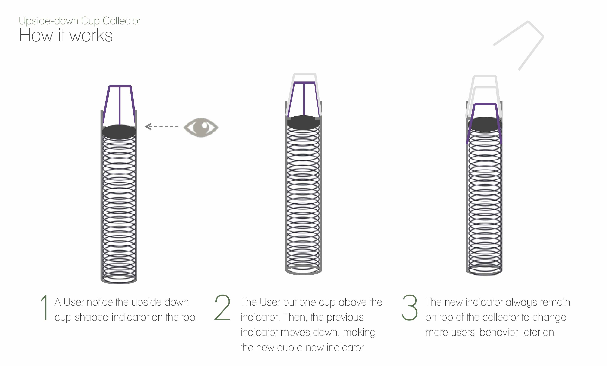
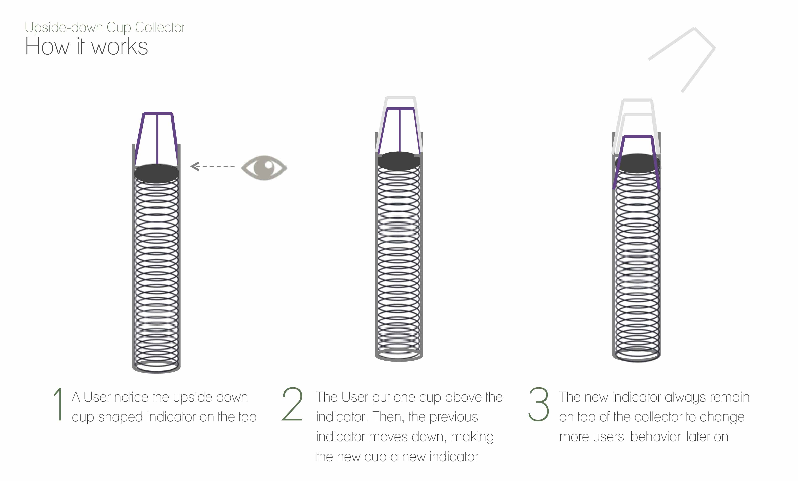

Flipped Cup Stand
- Date:2016
- Category:Product Design
- Tags:Design Storytelling, Product Design
Backgrounds
The aim of this project was to Redesigning Vernacular Products in Korea. I focused on a Cup Collector usually standing at the corner of old restaurants
Problems
SERIAL EFFECTS : It gets unusuable quickly if any of the cup inside the collector got stuck in the middle of the tunnel. Most of the situations occur when there still is remained liquid inside.

Inspirations
I wanted to explore easy ways to change people's behavior to nicely piling cups in order by Affordance Design

Structure
The new cup collector consists of one indicator cup attached to the spring inside the tunnel to keep the eye level. When the cup on the top is upside-down, then people will more likely to put cups in the same way. To put the cup upside down, one must empty the liquid inside. When more cups are stacked, the spring shrinks accordingly with the gravity, keeping the same eye-level as before.
 

Final Renderings
Rendering Images of Cup Collector
3D Modeled with Autodesk Inventor / Rendered with Keyshot